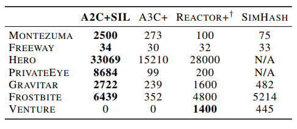

Self-Imitation-Learning
论文概述
本论文是ICML2018的一篇论文，提出了Self-Imitation Learning算法。论文的主要思想就是学习智能体过去好的经验以让它重复产生好的决策。
算法解读
自模仿学习的目标
模仿智能体自身过去好的经验。
经验回放池
将过去的经验片段连带累积回报存放在一个回放池里面$D={(s_t,a_t,R_t)}$(存放是所有的经验片段，不是仅仅好的经验片段)。其中$s_t,a_t$是时间t的状态和动作，$R_t=\sum_{k=t}^{\infty}\gamma^{k-t}r_k$是折现因子为$\gamma$的折现奖励之和。
off-policy AC loss
其中$(\cdot)_+=max(\cdot,0)$。$\pi_{\theta},V_{\theta}(s)$分别代表以$\theta$为参数的策略和值函数，$\beta^{sil}\in R^+$是值损失函数的超参数。从$(\cdot)$操作可以看出SIL算法只会模仿它过去那些得到的回报大于期望回报的决策。$L_{value}^{sil}$朝着off-policy回报R更新值估计.
Prioritized Replay
因为只有满足$R>V_{\theta}$的状态动作对会对SIL算法的梯度计算产生贡献，本文提出了使用prioritized experience replay来得到大量的符合这种条件的样本。也就是说这里从replay buffer里面使用clipped优势$(R-V_{\theta}(s))_+$作为优先级采集transitions（采样概率与$(R-V_{\theta}(s))_+$成比例）。因为优势越大，被采集的概率也就越大，这使得得到的transtions对梯度产生贡献的概率也就越大。
A2C+SIL
本论文选择了A2C+SIL的组合方式来验证算法的可行性。算法伪代码如下：
A2C的目标函数为：
其中$H_t^{\pi}=-\sum_{a}\pi(a|s_t)\log\pi(a|s_t)$代表简化后的信息熵，$\alpha$是信息熵正则化权重。$V_t^n=\sum_{d=0}^{n-1}\gamma^d r_{t+d}+\gamma^n V_{\theta}(s_{t+n})$是n步自举值。
理论证明
理论证明部分，就是证明SIL的学习目标函数可以看成是lower-bound-soft-Q-learning在信息熵正则化强化学习框架下的一种实现。
详细的证明过程可以参考原论文。最后的证明结论就是SIL可以被看成是朝着最优策略和最优值更新策略$\pi_{\theta}$和值$V_{\theta}$.
实验部分
本文的代码实现主要有两个：A2C+SIL和PPO+SIL.
实现细节
Atari
对于Atari实验，使用了3层卷积神经网络，并且将最后的4帧用于输入。在没有AC更新过后进行4次SIL学习(M=4)。这里将游戏的结束作为回合片段的结束，而不是将失去一条生命作为回合片段的结束。
Mujoco
对于Mujoco实验，使用了具有两个隐藏层具有64个神经元的MLP，每次迭代进行10次的自模仿学习。
实验结果
Key-Door-Treasure
该实验用于探索SIL如何有利于探索以及它是否和Count-Based探索方法相兼容。
实验结果说明两者是相兼容的。
Hard exploration Atari Games
下面是在6个Hard Exploration Atati Games的测试结果：
下面是在这几个Hard exploration Atari Games上SIL与其它Count-based exploration方法的比较结果：

这以看到在前6个游戏上，A2C+SIL的结果优于其它算法，但是对于最后一个游戏VENTURE，A2C+SIL没有得到任何的奖励，导致没有好的experience用于exploit，这点值得我们深思！
在Atari游戏上的总体性能
在49个Atari游戏上经过50M steps(200M frames)训练后的结果：
下面是A2C和A2C+SIL在49个游戏上的相对性能比较：
可以看出在35个游戏上A2C+SIL的性能超过了A2C。
MuJoCo tasks
这里探索SIL算法是否有利于连续性控制任务以及是否能被用于其他类型的策略优化算法，比如PPO。作者实现了PPO+SIL算法。
下面一行是延迟奖励的测试结果，显示当奖励被延迟（比如每20步给予奖励而不是每步都给予奖励）的时候SIL的优势更加明显。
SIL算法的缺陷
- 在Atari实验中，SIL算法经常在开始阶段学习更快，但是有时候在一些游戏中会陷入局部最优解。这说明在学习的早期阶段过多地exploition会影响性能。论文作者发现减少每次迭代SIL更新的次数或者在后面的学习阶段中为SIL目标函数使用一个小的权重能解决该问题甚至提升在这些游戏上的性能。
- 通过Mujoco实验我们可以发现在连续控制性任务上，SIL算法的表现并不是特别好（与原算法相比并没有提升很明显）。